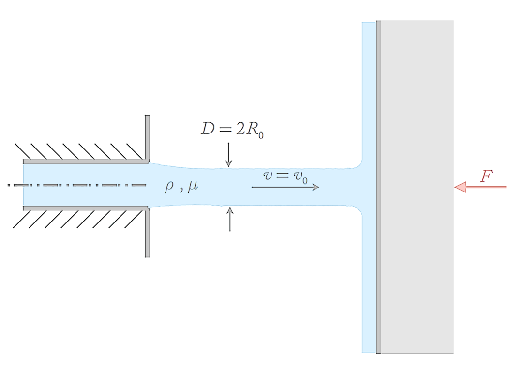

Course Prerequisites Exam
Problem 1
A stream of particles of mass m and separation l hits a perpendicular surface with velocity v.
The stream rebounds along the original line of motion with velocity v'.
The mass per unit length of the incident stream is λ = m/l.
What is the rate of mass arriving at the surface? What is the rate of change of the fluid's momentum? What is the force on the surface?
The stream rebounds along the original line of motion with velocity v'.
The mass per unit length of the incident stream is λ = m/l.
What is the rate of mass arriving at the surface? What is the rate of change of the fluid's momentum? What is the force on the surface?
— 1 —
Problem 2
A horizontal axisymmetric liquid jet with density ρ, viscosity μ, and diameter D = 2R0 impacts onto a vertical wall.

Find an expression for the force that the wall experiences due to this impact.
— 2 —
Problem 3
(1) Find the gradient ∇ϕ and the Laplacian ∇²ϕ for the scalar field ϕ = x² + xy + yz².
(2) Find the gradient and Laplacian of ϕ = sin(kx) sin(ly) exp( (k² + l²)1/2 z )
(3) For ϕ(x, y, z) = x² + y² + z² + xy − 3x, find ∇ϕ and find the minimum value of ϕ.
(2) Find the gradient and Laplacian of ϕ = sin(kx) sin(ly) exp( (k² + l²)1/2 z )
(3) For ϕ(x, y, z) = x² + y² + z² + xy − 3x, find ∇ϕ and find the minimum value of ϕ.
— 3 —
Problem 5
(1) The mean squared distance of a diffusing particle (random motion) in 2D can be calculated by:
d(t)2 = 4 · D · t
Plot the root mean squared distance ( √d(t)2 ) for D = 10 m²/s, D = 20 m²/s and D = 30 m²/s for the first 100 s. Use a legend to annotate which particle is which.
What is the advantage of using one plot over multiple plots to visualise this?
(2) Take the function:
f(x) = 3x4 + 4 / x
(i) Plot the function and the first, the second, and the third derivative in one plot, with -1 < x < 1. What do you see: are there any issues with this plot?
(ii) Instead, now plot the function and its first to third derivative in a total of four subplots. What are the advantages of using subplots in this case?
Tip: you can use
d(t)2 = 4 · D · t
Plot the root mean squared distance ( √d(t)2 ) for D = 10 m²/s, D = 20 m²/s and D = 30 m²/s for the first 100 s. Use a legend to annotate which particle is which.
What is the advantage of using one plot over multiple plots to visualise this?
# Your code here(2) Take the function:
f(x) = 3x4 + 4 / x
(i) Plot the function and the first, the second, and the third derivative in one plot, with -1 < x < 1. What do you see: are there any issues with this plot?
(ii) Instead, now plot the function and its first to third derivative in a total of four subplots. What are the advantages of using subplots in this case?
Tip: you can use
fig.tight_layout() to prevent overlap between subplot titles.# Your code here
— 5 —
Next: Maths Speedrun